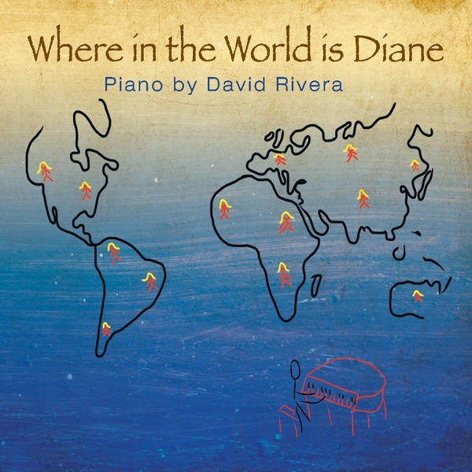

Where In The World Is Diane
2012 · solo piano
Bangkok to Luang Prabang, Miami Beach, then a room called Not Here. Places, not arguments.
I’m David Rivera. American neoclassical composer. Seven piano solo and ambient albums that fuse minimalism and electronica. The music is piano at heart. Subtle melodies for overlooked moments, sometimes with ethereal instruments, vocals, or synths. A place to slow down and take the time to listen.
I’m back at the instrument. Wander these albums for now. More music is coming. Stay on the lookout.
This page is only this album. If you want the album, press listen above.
The pieces
- Bangkok2:57
- Bhutan3:26
- Barbados3:01
- Vermont3:37
- Tokyo3:02
- Teterboro2:44
- Tanalot3:48
- Dublin5:22
- Luang Prabang3:50
- New Delhi1:35
- Miami Beach2:52
- Maldives3:56
- Not Here3:22
- Shanghai3:40
The other albums
- Melodic Subtlety – Solo Piano (2006) · minimalist piano
- Piano In Colors (2007) · expressive neoclassical
- Tantalizing Proof (2009) · quiet, insistent piano
- Clean Calm Piano (2010) · intimate piano
- Smitten with the Muses (2014) · beguiling piano
- Piano Reveries and Phantasies (2015) · contemplative works
- Lackadaisical Perfection (2027) · neoclassical piano
New work